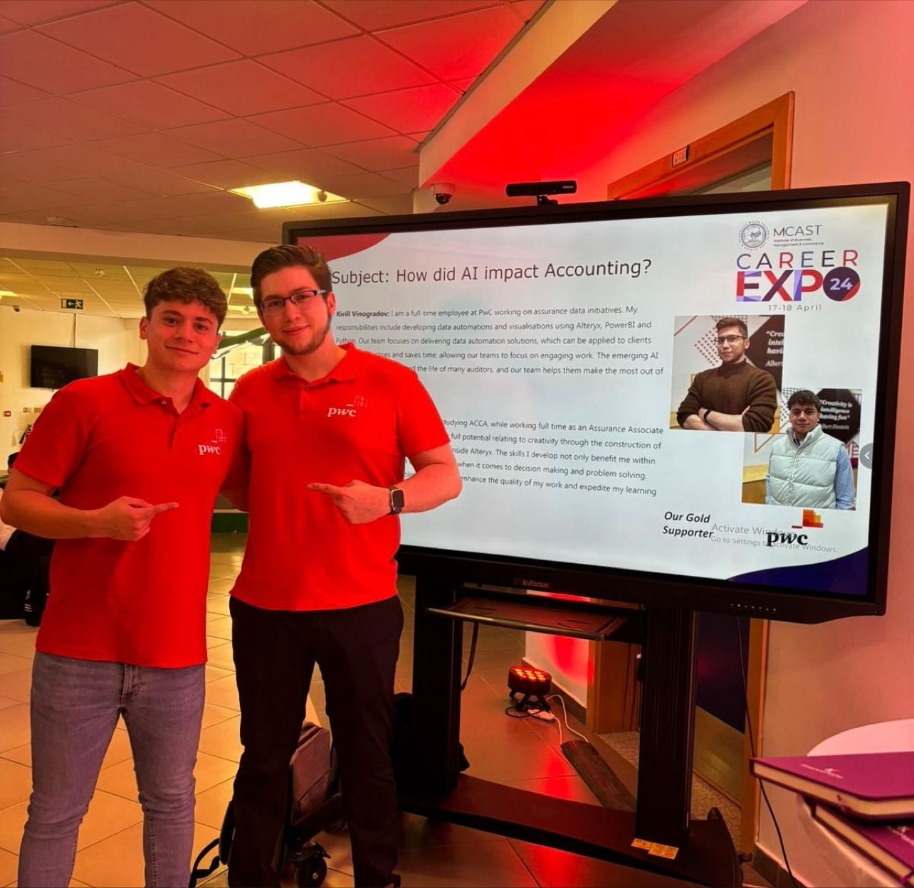
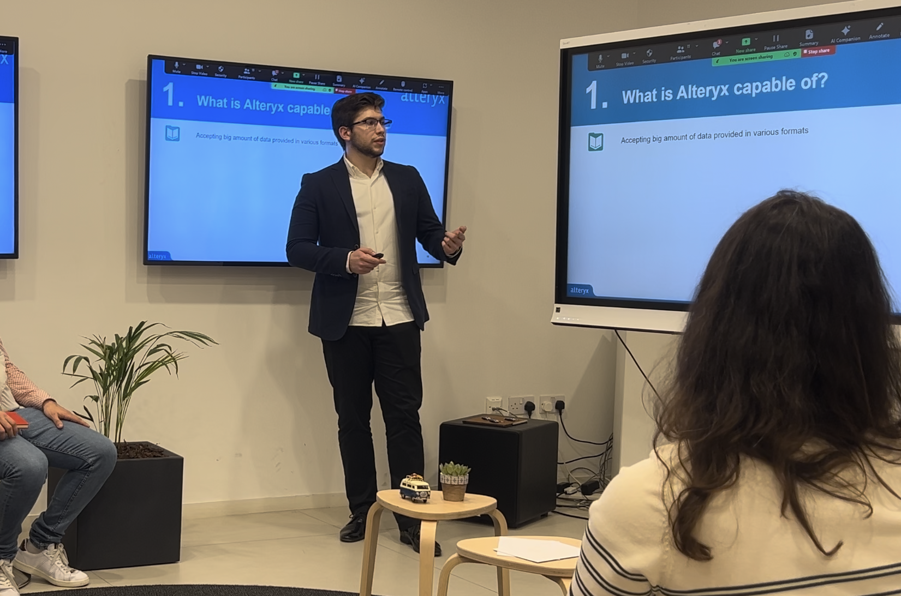

About Me
Thank you for showing interest in my profile!
My name is Kirill Vinogradov, and I have been living in Malta since 2013. I graduated from the University of Malta with a Master of Science in Strategic Management and Public Policy. During my studies, I discovered a passion for data. I realized that in every aspect of life, we encounter data, and those who can understand it can achieve great things.

University of Malta - giving a graduation speech.
I am always striving to improve, focusing on productivity, personal growth, and efficiency. I first applied my data skills in my personal life by creating bots, frameworks, and visualizations to enhance my quality of life. Once I had honed my skills, I joined PwC Malta. There, I mastered data engineering in Alteryx, data science in Python, data visualization in Power BI, and RPA in UiPath. I created and curated nearly a hundred automations for clients across various industries, saving thousands of hours of manual work and significantly improving the quality of work.
At PwC Malta, my role extended beyond development. I participated in numerous presentations, both client-oriented and internal, ensuring that the material was thoroughly explained and that expectations and plans were clearly communicated. I understand the importance of stakeholder communication and continually work to elevate my communication skills for maximum effectiveness.
MCAST Career Expo - presenting on the impact of AI on accounting.
Additionally, I had the pleasure of acting as team leader, managing a technical team of four people. During this time, I enabled new projects, communicated with clients, distributed workloads, and helped team members grow into their desired roles. This experience deepened my understanding of effective project management and the significance of strong leadership.
These efforts earned me the title of Senior Data Scientist. I am passionate about my work and am now seeking new opportunities to utilize my skillset and tackle challenging projects to further my advancement.
Presenting at Malta's first Alteryx User Group.
If you would like to know more about my professional experience, please feel free to check out my portfolio.